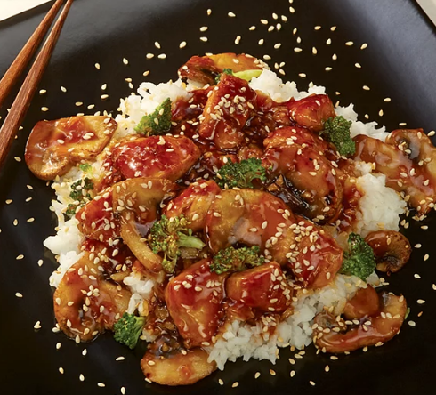

Teriyaki Chicken

Description
This is a simple recipe for making teriyaki chicken completely from scratch,
starting with the sauce!
Ingredients
The Sauce
- Traditionally brewed soy sauce
- Sake
- Mirin
- Sugar
The Chicken
- boneless, skinless chicken thighs
- corn flour
- sesame seeds
Steps